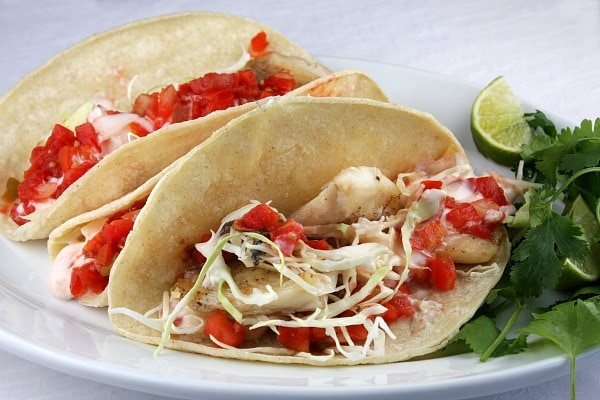

Fish Tacos

Ingredients List
- 1lb of tilapia
- salt and pepper
- 2 limes
- 2 avocadoes
- 1lb white flour
- 2 cups of water
- 1 onion
- 1 serrano pepper
- Vegetable oil( to fry)
- Tortillas
- 2 tomatoes
Steps for Recipe
- Start with heating up a pan with vegetable oil at high heat.
- Prepare the batter by mixing flour, water, salt, pepper, and also mix in lime juice from one lime.
- Prepare the fish by using part of the flour to cover the fish and then cover it with the batter.
- Check to see if oil is hot enough by dropping some batter in it and if it floats and gets golden, the oil is ready.
- Take the fish and drop it away from you in the pan and making sure it stays afloat.
- Remove the fish from the pan once its crispy and golden, place on parchment paper to cool and remove excess oil.
- Prepare pico de gallo by cutting onion, serrano pepper,tomatoes, and avocadoes.Add a pich of salt.
- Heat tortillas and serve tacos.